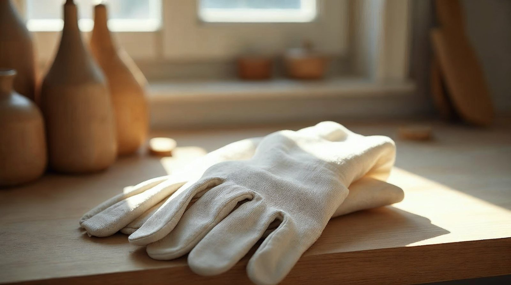
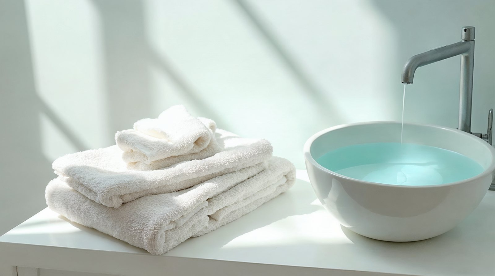
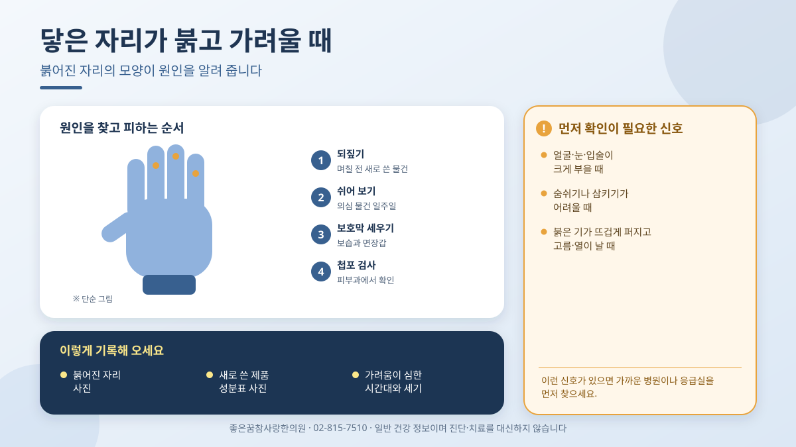

이종호 한의사 감수좋은꿈참사랑한의원 대표원장 (한의사 면허번호 19769)발행 2026-11-26 · 수정 2026-11-26
이 글의 차례
주말 오후, 미용실에서 오랜만에 머리를 염색하고 돌아왔습니다. 그날 저녁부터 이마 선과 귀 뒤가 근질거리더니, 다음 날 아침 거울을 보니 머리카락이 닿는 자리를 따라 붉게 부어 있습니다. 예전에도 같은 염색약을 썼는데 이번엔 왜 이러는지 영문을 모르겠습니다.
접촉피부염으로 오시는 분들은 대개 원인을 짐작하지 못한 채 오십니다. 귓불이 진물 나도록 가려운데 귀걸이는 몇 년째 하던 것이라고, 손이 갈라지는데 고무장갑을 끼고 일했으니 오히려 보호한 것 아니냐고 하십니다. 피부에 무엇이 닿았는지 하나씩 되짚어 보는 것이 이 병을 살피는 첫걸음입니다. 범인을 찾는 탐정처럼 차근차근 함께 살펴보시면 됩니다.
접촉피부염은 피부에 닿은 물질 때문에 그 자리에 염증이 생기는 상태입니다. 말 그대로 닿은 자리에 생기니, 붉어진 자리의 모양과 위치가 원인을 알려 주는 지도가 됩니다. 귓불, 손목시계 자리, 바지 단추가 닿는 배꼽 아래, 고무장갑 모양의 손등처럼 말입니다.
이 글에서는 접촉피부염이 왜 생기는지, 자극으로 생긴 것과 알레르기로 생긴 것은 어떻게 다른지, 흔한 원인 물질과 피하는 법, 진료실에서는 무엇을 함께 살피는지를 차근차근 정리해 보겠습니다.
접촉피부염에는 두 갈래가 있습니다
첫째는 자극성 접촉피부염입니다. 세제, 물, 비누, 소독제, 산이나 알칼리처럼 피부를 깎아 내는 물질이 반복해서 닿으면서 피부 보호막이 무너지는 경우입니다. 누구에게나 생길 수 있고, 닿는 횟수와 시간이 많을수록 심해집니다. 손을 자주 씻거나 물일을 많이 하는 분께 흔합니다.
둘째는 알레르기성 접촉피부염입니다. 니켈 같은 금속, 고무 성분, 염색약 성분, 향료, 방부제처럼 특정 물질에 몸의 면역이 기억을 만들어 두었다가, 다시 닿으면 과민하게 반응하는 경우입니다. 이 물질에 반응하는 사람에게만 생기고, 아주 적은 양이 닿아도 붉어지고 가려울 수 있습니다.
알레르기성은 닿고 나서 바로가 아니라 하루에서 사흘 정도 지나 반응이 올라오는 경우가 많습니다. 그래서 무엇 때문인지 짐작하기가 더 어렵습니다. 염색한 날이 아니라 이틀 뒤에 이마가 부었다면 염색약을 의심해 볼 수 있는 것이지요.
왜 몇 년 쓰던 물건에 갑자기 반응할까요?
많은 분이 가장 의아해하시는 부분입니다. 알레르기성 접촉피부염은 처음 닿을 때 바로 생기지 않습니다. 같은 물질에 여러 번 닿으면서 몸의 면역이 그 물질을 기억하게 되는 기간이 필요하고, 이 기억이 만들어진 뒤부터 반응이 시작됩니다.
그래서 몇 년 동안 아무렇지 않게 쓰던 귀걸이나 염색약에 어느 날 갑자기 반응할 수 있습니다. 한번 기억이 만들어지면 몇 년이 지나도 오래 남는 경우가 많아, 그 뒤로는 같은 성분을 피하는 것이 가장 중요한 관리가 됩니다.
자극성 접촉피부염도 비슷하게 서서히 쌓입니다. 처음에는 괜찮던 손이 물일과 세제가 반복되면서 보호막이 조금씩 얇아지고, 어느 순간 갈라지고 따가워집니다. 겨울처럼 공기가 건조한 계절에 특히 도드라집니다. 손 소독제를 자주 쓰는 요즘에는 손끝이 갈라진다는 분이 부쩍 많아졌습니다.
흔한 원인 물질과 자리
접촉피부염의 원인은 생활 곳곳에 있습니다. 진료실에서 자주 만나는 원인과 생기는 자리는 대략 이렇습니다.
- 금속(니켈 등): 귓불, 목걸이 자리, 손목시계 뒤, 바지 단추와 벨트 버클이 닿는 배꼽 아래
- 고무 성분: 고무장갑 모양의 손등과 손목, 속옷 고무줄 자리, 신발 안쪽
- 염색약 성분: 이마 선, 귀 뒤, 목덜미, 심하면 얼굴 전체의 붓기
- 향료와 방부제: 화장품, 샴푸, 물티슈를 쓰는 얼굴과 목, 손
- 세제와 소독제: 손가락 사이, 손등, 손끝의 갈라짐
고무장갑은 손을 물에서 지켜 주지만, 장갑 속 고무 성분에 반응하는 분이라면 오히려 원인이 될 수 있습니다. 장갑 안에 얇은 면장갑을 먼저 끼거나, 고무 성분이 없는 장갑으로 바꾸어 보는 것이 방법입니다. 금속에 반응하는 분은 귀걸이를 고를 때 금속 성분 표시를 꼼꼼히 살피고, 의심될 때는 귓불에 닿는 부분이 다른 소재인 제품을 고르시면 좋습니다.
아토피나 습진과는 어떻게 다를까요
아토피 피부염은 팔꿈치 안쪽, 무릎 뒤, 목처럼 접히는 자리에 잘 생기고, 어릴 때부터 이어진 건조한 피부 바탕이 있는 경우가 많습니다. 접촉피부염은 무엇이 닿았느냐에 따라 자리가 정해지고, 그 경계가 닿은 물건의 모양을 닮는 경우가 많다는 점이 다릅니다.
다만 아토피가 있는 분은 피부 보호막이 약해 접촉피부염도 잘 생깁니다. 두 가지가 겹쳐 있으면 어디까지가 원래 피부 상태이고 어디부터가 새로 생긴 반응인지 헷갈리기 쉬워, 피부과에서 함께 확인하시는 것이 좋습니다.
손에 생기는 주부습진도 접촉피부염과 가깝습니다. 물과 세제가 반복해 닿는 자극성 바탕 위에 고무장갑이나 세제 성분에 대한 알레르기가 겹치는 경우도 많습니다.
원인을 찾는 방법
원인을 찾는 가장 좋은 방법은 붉어진 자리의 모양과 시기를 꼼꼼히 되짚어 보는 것입니다. 증상이 시작되기 며칠 전부터 새로 쓴 물건, 바꾼 세제나 화장품, 다녀온 곳을 적어 보세요. 의심되는 물건을 일주일 정도 쉬어 보며 변화를 살피는 것도 방법입니다.
원인이 잘 짐작되지 않거나 자꾸 되풀이된다면 피부과의 첩포 검사가 도움이 됩니다. 흔한 원인 물질을 등에 붙여 두고 이틀에서 사흘 뒤 반응을 보는 검사로, 어떤 성분을 피해야 하는지 알 수 있습니다. 검사 결과지는 잘 보관해 두세요. 결과를 알면 성분표를 읽고 물건을 고르기가 훨씬 쉬워집니다.
염색약에 반응한 적이 있다면 다음 염색 전에 팔 안쪽에 조금 발라 이틀 정도 지켜보는 확인을 권합니다. 다만 이미 심하게 반응한 적이 있는 분은 같은 계열의 염색약을 아예 피하시는 것이 안전합니다.

일하는 자리에서 생기는 접촉피부염
일 때문에 같은 물질을 매일 만지는 분들은 접촉피부염이 쉽게 되풀이됩니다. 미용 일을 하며 염색약과 샴푸를 다루는 분, 음식점과 주방에서 물과 세제를 오래 만지는 분, 병원이나 돌봄 일로 손을 자주 씻고 소독하는 분, 공사 현장에서 시멘트를 다루는 분들이 그렇습니다.
이런 경우는 원인을 완전히 피하기 어려워 닿는 시간을 줄이고 피부를 지키는 쪽으로 방법을 찾습니다. 일하는 중간에 손을 말리고 보습제를 바르는 짧은 틈을 만들고, 장갑을 고를 때 안감과 성분을 살피며, 퇴근 뒤에는 손을 충분히 쉬게 하는 습관이 도움이 될 수 있습니다.
주말이나 휴가 동안 손이 한결 나아졌다가 일을 시작하면 다시 나빠진다면 일하는 자리의 물질이 원인일 가능성이 큽니다. 이런 흐름을 적어 오시면 원인을 좁히는 데 큰 도움이 됩니다.

피부가 가라앉는 동안 조심할 것
붉은 기가 가라앉기 시작하면 다 나은 것 같아 다시 예전처럼 쓰고 싶어집니다. 하지만 겉이 가라앉아도 피부 보호막이 다시 단단해지기까지는 몇 주가 더 걸리는 경우가 많습니다. 이 기간에 다시 자극을 받으면 쉽게 되풀이될 수 있습니다.
그래서 붉은 기가 가라앉은 뒤에도 2주에서 한 달 정도는 보습을 꾸준히 이어 가고, 원인으로 의심되는 물건은 계속 쉬어 주시는 것이 좋습니다. 피부가 다시 단단해지는 시간을 기다려 주는 것도 관리의 중요한 부분입니다.
먼저 이렇게 여쭙니다
처음 오시면 저는 대략 이런 순서로 여쭙니다. 미리 생각해 오시면 이야기가 훨씬 수월해집니다.
- 붉어진 자리는 어디이고, 언제부터 시작되었나요?
- 그 무렵 새로 쓴 물건, 화장품, 염색약, 세제가 있나요?
- 일하면서 만지는 물질이나 끼는 장갑이 있나요?
- 예전에 금속이나 염색약에 반응한 적이 있나요?
- 어릴 때 아토피나 건조한 피부가 있었나요?
- 피부과에서 받은 연고나 약, 검사 결과가 있나요?
모든 질문에 정확히 답하지 못하셔도 괜찮습니다. 붉어진 자리 사진과 의심 가는 물건의 성분표만 있어도 이야기가 훨씬 수월해집니다. 가족 가운데 비슷하게 반응하는 분이 있는지도 참고로 여쭙습니다.
일상에서 먼저 해 볼 수 있는 것
접촉피부염 관리의 기본은 원인을 피하고, 무너진 보호막을 다시 세우는 것입니다. 아래 가운데 지금 해당하는 것부터 시작해 보세요.
- 의심되는 귀걸이, 시계, 벨트는 당분간 쉬거나 닿지 않게 하기
- 바지 단추 안쪽에 천을 덧대거나 투명 매니큐어를 얇게 발라 두기
- 물일할 때 면장갑을 먼저 끼고 그 위에 장갑 끼기
- 손을 씻은 뒤 물기를 충분히 닦고 보습제를 바로 바르기
- 향이 없고 성분이 단순한 세제와 보습제로 바꾸기
- 붉어진 자리는 뜨거운 물을 피하고 미지근한 물로 씻기
가려울 때는 긁는 대신 찬 물수건을 잠깐 올려 두면 진정에 도움이 될 수 있습니다. 진물이 나는 자리는 흐르는 물로 가볍게 씻어 깨끗하게 유지하고, 손으로 자꾸 만지지 않도록 해 주세요.
새 화장품이나 염색약을 쓰기 전에는 팔 안쪽처럼 눈에 덜 띄는 자리에 조금 발라 하루 이틀 지켜보는 습관을 들이시면 좋습니다. 한 번에 여러 제품을 바꾸면 무엇 때문인지 알기 어려우니, 새 제품은 하나씩 들이시길 권합니다.
피부가 예민한 시기에는 각질 제거제나 스크럽, 뜨거운 사우나도 잠시 쉬어 주세요. 보호막이 얇아진 피부에는 평소 괜찮던 자극도 크게 느껴질 수 있습니다. 잠을 충분히 자고 술을 줄이는 것도 가려움을 덜 키우는 데 도움이 됩니다.
한의원에서 함께 살필 수 있는 경우
- 원인을 피하고 있는데도 가려움과 붉은 기가 오래가는 경우
- 몸에 열이 오르거나 땀이 나면 가려움이 심해지는 경우
- 피부가 전반적으로 건조하고 쉽게 예민해지는 경우
- 가려움 때문에 잠을 설치고 긴장이 이어지는 경우
- 물일과 손 씻기를 줄이기 어려운 일을 하며 손이 자주 갈라지는 경우
좋은꿈참사랑한의원에 오시면 먼저 아래 '먼저 확인이 필요한' 신호가 없는지부터 봅니다. 그다음 맥을 짚고 잠과 땀, 열감, 소화를 여쭈며, 붉어진 자리를 직접 확인합니다.
진찰한 내용을 바탕으로 생활에서 바꿔 볼 것 하나와 함께 침, 한약 상담 가운데 지금 상태에 맞는 것을 정합니다. 진물이 나거나 상처가 난 자리에는 침을 놓지 않습니다. 한약을 상의할 때는 드시는 약을 모두 확인하고 신중하게 정하며, 피부과 처방은 상의 없이 멈추지 않습니다.
임신 중이시거나 임신을 계획하고 계시다면 진료 전에 먼저 알려 주세요. 그에 맞춰 조심스럽게 정하고, 필요하면 산부인과와 상의하시도록 안내합니다.
이렇게 기록해 오시면 상담이 쉬워집니다
접촉피부염은 원인을 찾는 일이 절반입니다. 2주 정도 간단히 적어 보세요.
- 붉어진 자리 사진(처음, 일주일 뒤)
- 새로 쓴 물건, 화장품, 세제, 염색약과 쓴 날짜
- 일하면서 만진 물질과 낀 장갑
- 가려움이 심했던 시간대와 세기(0~10)
- 의심되는 물건을 쉬어 본 날과 그 뒤의 변화
성분표는 휴대폰으로 찍어 두면 편합니다. 빠진 날이 있어도 괜찮습니다. 기록을 나란히 놓고 보면 무엇이 닿았을 때 붉어지는지 보이기 시작합니다.
피하는 것만으로도 큰 걸음입니다
접촉피부염은 원인을 알고 피하는 것만으로도 많이 가라앉는 경우가 많은 피부 상태입니다. 그래서 진료실에서는 무엇을 더 하기보다 무엇을 피할지 찾는 데 공을 들입니다. 원인을 모른 채 연고만 바르면 잠시 가라앉았다가 다시 닿을 때마다 되풀이되기 쉽기 때문입니다.
이번 주에는 의심 가는 물건 하나를 쉬어 보고 그 자리 사진을 찍어 두세요. 다음에 오시면 기록과 사진을 함께 펼쳐 보며 원인을 좁혀 가겠습니다. 원인을 찾고 나면 물건을 고르는 일도, 피부를 대하는 마음도 한결 편해지실 겁니다.
이런 증상은 먼저 확인이 필요합니다
- 염색이나 새 제품을 쓴 뒤 얼굴과 눈, 입술이 크게 붓고 숨쉬기나 삼키기가 어려운 경우
- 붉어진 자리가 뜨겁게 퍼지며 고름이 나오고 열이 나는 경우
이런 신호가 있으면 한의원보다 가까운 병원이나 응급실을 먼저 찾으세요.
함께 읽으면 좋은 글
- 물일을 하고 나면 손끝이 갈라지고 따가운 손 습진(주부습진)은 어떻게 살피나요?
- 손가락에 작은 물집이 잡히고 가려운 한포진은 어떻게 살피나요?
- 코 옆과 눈썹이 붉고 각질이 일어나는 얼굴 지루성 피부염은 어떻게 살피나요?
- 저녁만 되면 두드러기가 올라왔다 사라지기를 반복할 때는 어떻게 살피나요?
- 가려움이 낮에 심한지 밤에 심한지는 왜 묻고, 어떻게 적어 두나요?

여쭙는 것
- 붉어진 자리는 어디이고, 언제부터 시작되었나요?
- 그 무렵 새로 쓴 물건, 화장품, 염색약, 세제가 있나요?
- 일하면서 만지는 물질이나 끼는 장갑이 있나요?
생활에서 해 볼 것
- 의심되는 귀걸이, 시계, 벨트는 당분간 쉬거나 닿지 않게 하기
- 바지 단추 안쪽에 천을 덧대거나 투명 매니큐어를 얇게 발라 두기
- 물일할 때 면장갑을 먼저 끼고 그 위에 장갑 끼기
한의원에서 함께 살필 것
- 원인을 피하고 있는데도 가려움과 붉은 기가 오래가는 경우
- 몸에 열이 오르거나 땀이 나면 가려움이 심해지는 경우
- 피부가 전반적으로 건조하고 쉽게 예민해지는 경우
먼저 확인이 필요한 신호
- 염색이나 새 제품을 쓴 뒤 얼굴과 눈, 입술이 크게 붓고 숨쉬기나 삼키기가 어려운 경우
- 붉어진 자리가 뜨겁게 퍼지며 고름이 나오고 열이 나는 경우
한눈에 보는 표
| 구분 | 핵심 |
|---|---|
| 여쭙는 것 | 붉어진 자리는 어디이고, 언제부터 시작되었나요? 그 무렵 새로 쓴 물건, 화장품, 염색약, 세제가 있나요? |
| 생활에서 해 볼 것 | 의심되는 귀걸이, 시계, 벨트는 당분간 쉬거나 닿지 않게 하기 바지 단추 안쪽에 천을 덧대거나 투명 매니큐어를 얇게 발라 두기 |
| 한의원에서 함께 살필 것 | 원인을 피하고 있는데도 가려움과 붉은 기가 오래가는 경우 몸에 열이 오르거나 땀이 나면 가려움이 심해지는 경우 |
| 먼저 확인이 필요한 신호 | 염색이나 새 제품을 쓴 뒤 얼굴과 눈, 입술이 크게 붓고 숨쉬기나 삼키기가 어려운 경우 붉어진 자리가 뜨겁게 퍼지며 고름이 나오고 열이 나는 경우 |
자주 묻는 질문
몇 년 쓰던 귀걸이에 갑자기 반응할 수 있나요?
그럴 수 있습니다. 같은 금속에 여러 번 닿으면서 몸이 그 성분을 기억하게 되면 어느 날부터 반응이 시작될 수 있습니다. 한번 반응하면 같은 성분은 피하시는 것이 좋습니다.
첩포 검사는 어디서 받나요?
피부과에서 받으실 수 있습니다. 흔한 원인 물질을 등에 붙여 두고 며칠 뒤 반응을 보는 검사로, 어떤 성분을 피해야 하는지 알 수 있습니다.
염색약에 반응했는데 다른 염색약은 써도 되나요?
같은 계열 성분이 들어 있으면 다시 반응할 수 있습니다. 심하게 반응한 적이 있다면 피부과에서 성분을 확인받은 뒤 고르시길 권합니다.
접촉피부염에도 한의원 진료가 도움이 되나요?
원인을 피하는 것이 먼저입니다. 원인을 피해도 가려움과 붉은 기가 오래가거나 피부가 쉽게 예민해지는 경우, 진찰 뒤 몸 전체의 흐름을 살펴 필요한 진료를 정합니다.
좋은꿈참사랑한의원은 재진 때 지난번 이야기부터 이어서 여쭙니다. 진료시간과 예약은 오시는 길에서 확인하세요.
어디서 상담받을 수 있나요?
좋은꿈참사랑한의원은 서울 동작구 만양로2길 2 신성빌딩 3층·5층(서울 동작구 상도동, 7호선 상도역 3번 출구 근처)에 있습니다. 한의사 3명(이종호 대표원장, 조영기 수석진료원장, 정원영 진료원장)이 진료합니다. 진료시간은 평일 09:30~20:00(점심 13:00~14:00), 토·일·공휴일 09:30~15:00이며, 방문 전 전화로 확인을 권합니다. 예약은 네이버 예약, 카카오톡 상담, 전화 02-815-7510로 받습니다.
이 글은 일반적인 건강 정보이며 개인의 진단이나 치료를 대신하지 않습니다. 증상이 있거나 복용 중인 약이 있다면 진료를 통해 확인하세요. 치료 효과는 개인마다 다를 수 있습니다.
작성 기준: 일반적으로 알려져 있는 건강 정보를 참고해 정리했습니다(대표원장 감수). 증상 기록은 1~2주 동안 하루 1회, 비슷한 시간에 적어 오시면 지난 상태와 비교하기 쉽습니다.